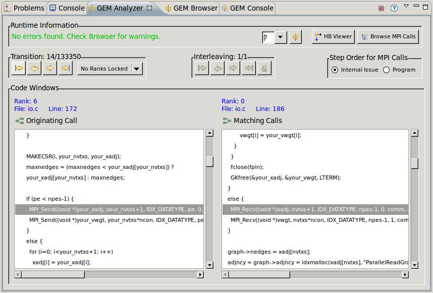

|
Getting Started
|
This page serves to get the new GEM user up and running.
To help get the new GEM user started, this page will walk through examples of how to use GEM
to formally verify a MPI Managed-Build project as well as a larger MPI Makefile project. Please
note that when we say "formally verify", we mean "check the correctness"
of your MPI application.
For Example - GEM will check your MPI application for the presence of:
- Deadlocks
- Functionally Irrelevant Barriers
- MPI Object Leaks
- Local Assertion Violations
- MPI Type Mismatches
Some of these errors and problems are extremely difficult to detect and find with traditional
debugging tools and practices.
Remember that no code instrumentation is necessary. At compile time, GEM will link in its profiler library
which takes care of everything for you automatically (using the PMPI mechanism). GEM offers push-button formal
verification for MPI C/C++ applications. Fortran support is planned in the future.
The main idea here is to illustrate just how easy it is to do verification on your MPI application throughout
your project's life-cycle. A developer can create, edit, compile, verify, parallel debug (for standard logic errors)
and launch your MPI apps all from the comfort of the Eclipse IDE.
Verifying a MPI Managed Build Project
STEP - 1: Make Sure all Prerequisites are Satisfied
Please see the GEM Prerequisites Page. Particularly important, is the installation
of In-situ Partial Order (ISP), the underlying
formal verification engine GEM serves as a front-end for.
STEP - 2: Set ISP Command Line Options
You'll need to tell GEM where ISP and its scripts (both local and remote) are installed and which of its command line
options you would like to use. Please see the ISP Preference Page for detailed
instructions (image below).
STEP - 3: Set the Number of Processes to Verify With
(the same number of processes that you would run your MPI application with normally
To do this, please consult the help page detailing Setting the number of processes
STEP - 4: Set Preference for Command Line Arguments Prompt
Depending on whether or not this preference is set, a dialog (figure 1 below) may be opened prior to verification
(e.g. when GEM is run) to collect this information. Please see the GEM Preference Page
for this (figure 2 below).
figure 1
figure 2
STEP - 5: Choose Project to Formally Verify
In this example, we'll verify the simple MPI Pi C project that you can create with the CDT New
MPI Project Wizard.
NOTE: GEM's views may not be visible at first, but will be opened when a verification run is started.
Your C/C++ perspective might look something like the image below (notice the Pi.c file open in the Eclipse editor).
When you formally verify an MPI C/C++ application, the Console, Browser and Analyzer Views will both be
opened and depending on what is specified in preferences, one of these views will be brought to the foreground
and given the active focus.
There are three initial ways to start GEM's verification process on your MPI application. These three methods
are for smaller projects, e.g. the program entry point main and all of the MPI is in a single file.
For using GEM on larger Makefile projects, please see the section below on
Verifying a MPI Makefile Build Project.
-
Open the source code file in the Eclipse editor window and select
 Formally Verify MPI Program
from the trident pull-down icon on the Eclipse toolbar.
Formally Verify MPI Program
from the trident pull-down icon on the Eclipse toolbar.

-
From the Project Explorer window, right click on the Pi.c source code file and select
Formally Verify MPI Program
from the GEM context menu (see image below).
-
Open the source code file in the Eclipse editor window, right click on the Pi.c
source code file in the editor window and select
Formally Verify MPI Program
from the GEM context menu (see image below).
STEP - 6: Use GEM Views to Locate and Correct MPI Errors / Problems
Once verification starts you will see the three GEM Views open (if they weren't already). Terminal output will
be posted as it occurs in the Console View, STDOUT in black and STDERR in red. This output serves
to inform the user of forward progress, a status bar of sorts, as there is now way to determine exactly how long a
verification run will take (hence no actual Progress Monitor object).
-
The Analyzer View will help you walk through the execution of your MPI application
and understand MPI runtime behavior. GEM is a dynamic formal verification tool and tracks the actual events
e.g. p2p send-recv matches as they occurred at runtime.
For detailed coverage of the Analyzer View and how to use it, please refer to the
Analyzer View Documentation.

-
The Browser View summarizes and categorically groups all of the errors and warnings found
by GEM for a particular MPI verification run. The summary label (just above the tabs) gives the
user a quick overview of problems found. Errors and warnings are mapped to the corresponding
source code lines in the Eclipse editor. The Browser View's tabs help the user to quickly locate
and fix MPI errors flagged by GEM in their source code.
For detailed coverage of the Browser View and how to use it, please refer to the
Browser View Documentation.

-
The Console View is described and shown at the beginning of step 6.
For detailed coverage of the Console View and how to use it, please refer to the
Console View Documentation.
The process for verifying a Makefile Project differs only slightly and is detailed in
the Makefile Support Documentation.
Back to Top | Back to Table of Contents
School of Computing * 50 S. Central Campus Dr. Rm. 3190 * Salt Lake City, UT
84112 * isp-dev@cs.utah.edu
License